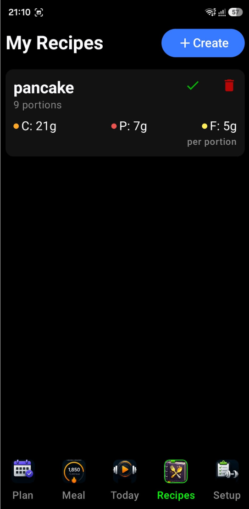
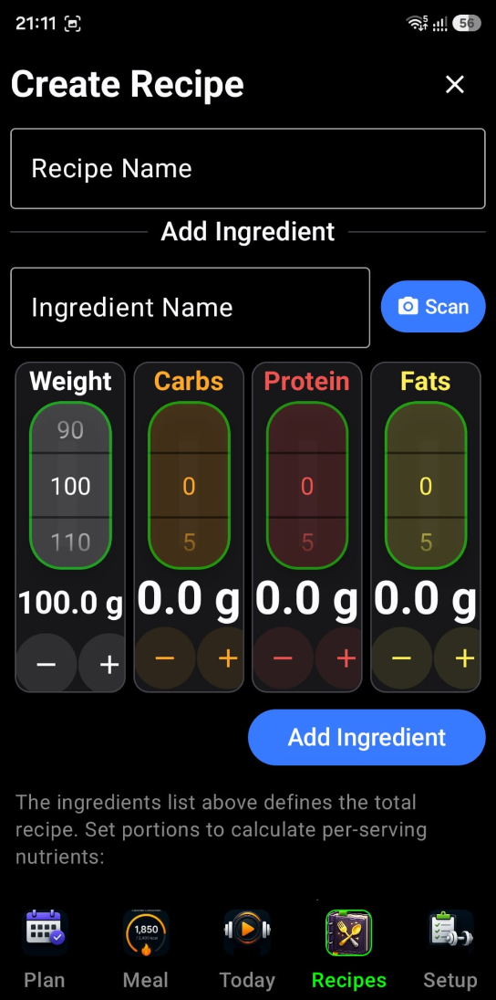

Your personal digital cookbook and meal-prep assistant.
The Recipe logging is your personal digital cookbook and
meal-prep assistant. It allows you to create complex meals
(recipes) from multiple ingredients, calculate their nutritional
value per portion, and log them to your daily history with a
single tap. Here is a detailed breakdown of its interface and
functionality.
1 Recipe Management
(The "My Recipes" List)
The main screen provides a clean, searchable list of all
your saved recipes:
Search & Filter —
A dedicated filter bar at the top allows you to quickly
find specific recipes as your collection grows.
Macro-at-a-Glance —
Each recipe card displays its total Carbs, Protein, and
Fats per portion, so you know exactly how a meal fits
into your daily targets before you eat it.
Quick Actions:
Log (Checkmark ✓)
— Instantly adds one portion of that recipe to
your daily meal history.
Edit (Pencil ✎)
— Opens the editor to modify ingredients or
portions.
Delete (Trash 🗑)
— Removes the recipe from your library.
🔍 Search recipes…
Chicken & Rice Bowl
C 48gP 42gF 12g
✓✎🗑
Post-Workout Shake
C 30gP 35gF 6g
✓✎🗑
2 The Recipe Editor
When you create or edit a recipe, you enter a specialized
workspace:
Ingredient Composition
— You can add multiple ingredients to a single recipe.
The app automatically sums up the nutrients for the
entire batch.
Portion Control — You
specify how many portions a recipe makes. The widget
then does the math to show you the nutritional breakdown
of a single serving.
Dynamic Updating — As
you add ingredients or change weights, the macro badges
update in real-time, helping you "balance" a recipe
while you're creating it.
3 AI Ingredient Scanner
Gemini AI
This is a standout feature for simplifying manual entry.
While in the Recipe Editor:
Camera Integration —
You can tap the Photo Camera icon to launch the AI
Scanner.
Gemini AI Analysis —
Take a photo of a single ingredient (like a chicken
breast or a bowl of rice). The Google Gemini AI analyses
the image to identify the food and estimate its weight
and nutritional content.
Auto-Add — The
identified ingredient and its macros are automatically
populated into your recipe draft, significantly reducing
the need for manual typing and lookups.
📷 Snap ingredient
→
🤖 Gemini identifies & weighs
→
➕ Auto-added to recipe
4 Technical Intelligence & Sync
History Integration —
When you log a recipe, it doesn't just add a name; it
logs the specific macro breakdown calculated by the
recipe to your meal history.
State Management — The
widget uses a dedicated runtime persistence that ensures
your search queries and draft recipes are preserved even
if you navigate between different parts of the app.
Permission Handling —
It includes built-in logic to request camera permissions
only when needed (e.g., when you first try to use the AI
scanner).
📖 Recipe Editor — screen preview


In Summary
The Recipes Widget turns the chore of tracking complex meals
into a simple process. By combining AI-powered scanning with
automated portion math, it ensures that even home-cooked,
multi-ingredient meals are tracked with the same precision
as a simple snack.
If you are like many, you most probably cook at home and it
is hard to calculate the nutritional value of a home-cooked
meal. This functionality allows you to create a recipe,
store it in the application, and then add it to your
consumed-per-day meals just by clicking on an item on the My
Recipes screen.